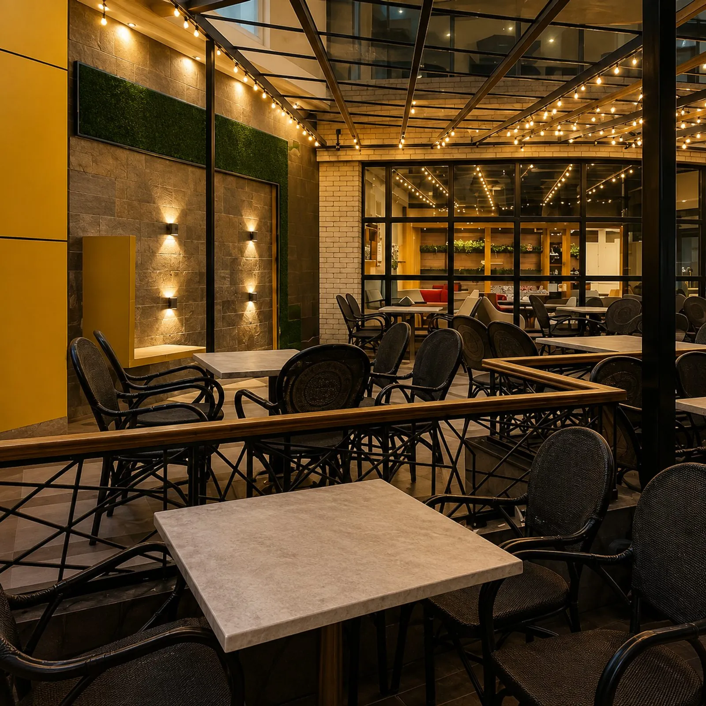
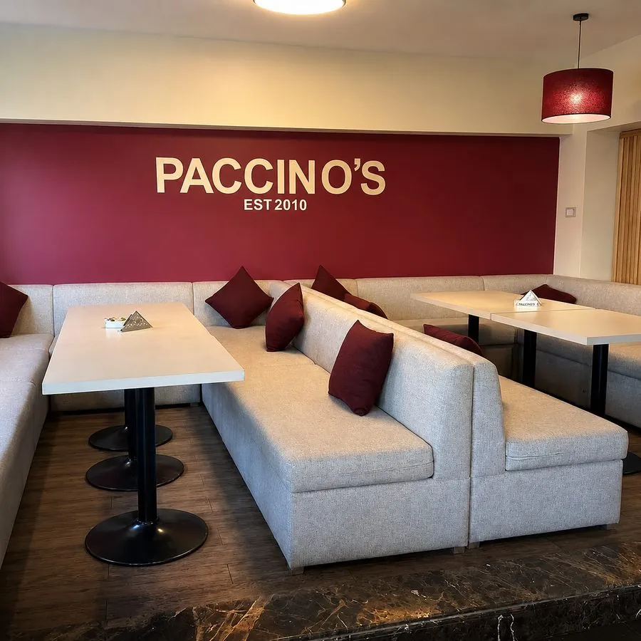
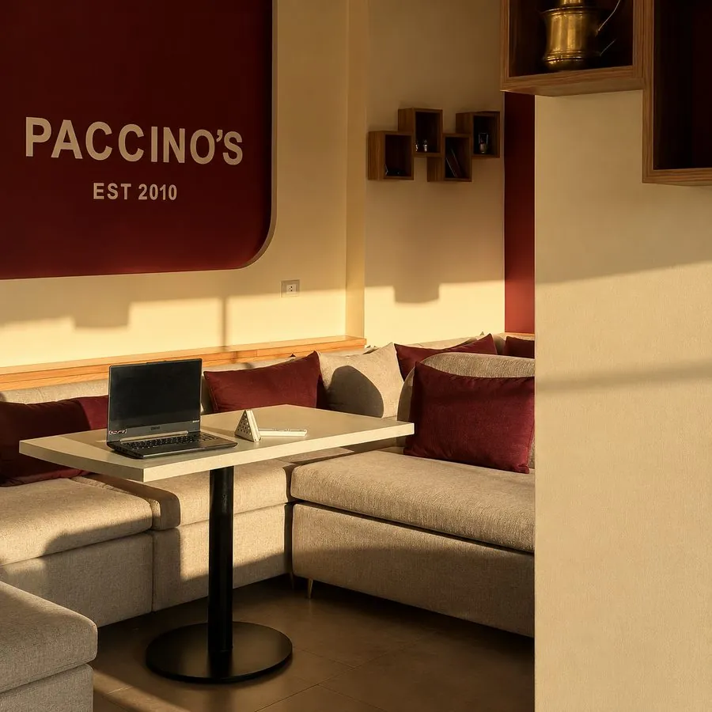
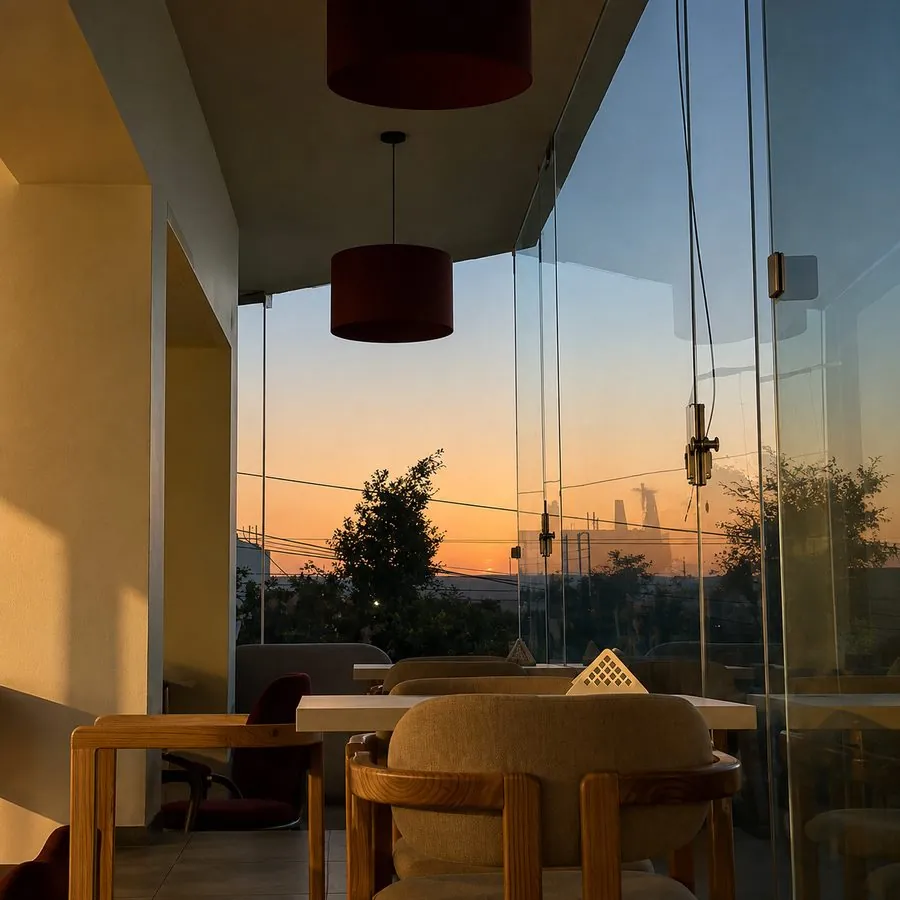
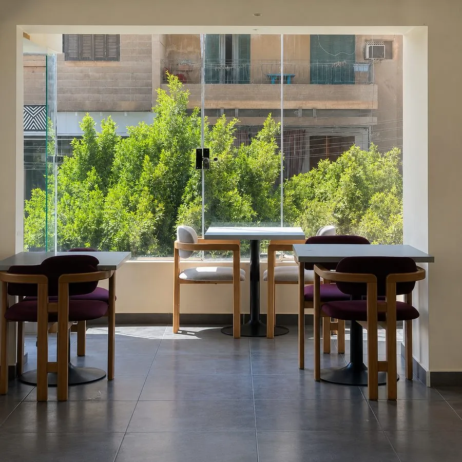
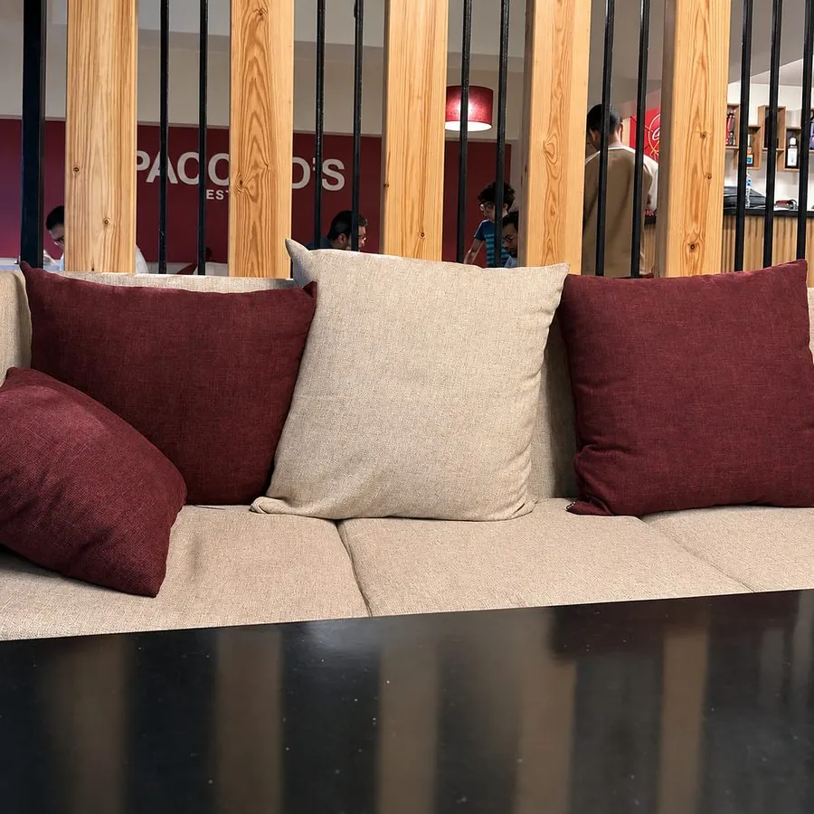
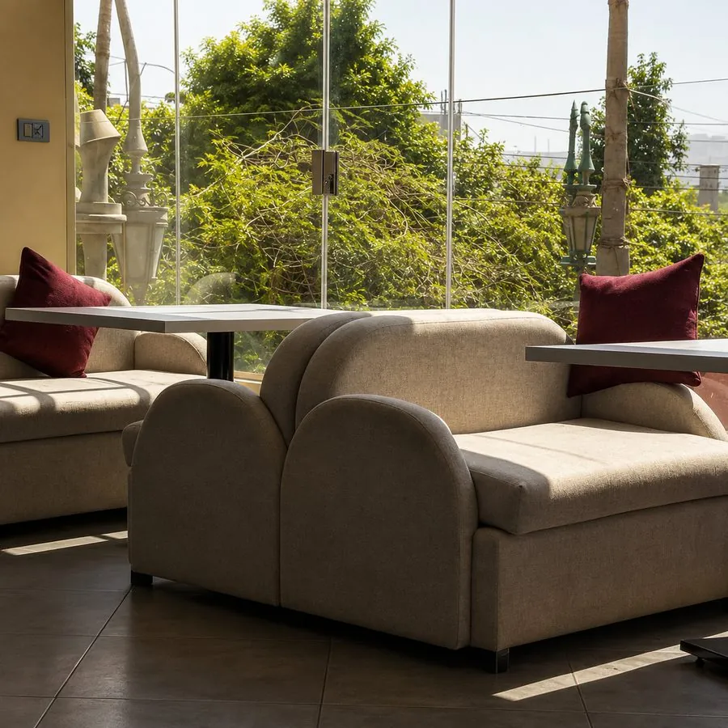

آيس كوفي
★قهوتنا ساقعة على مزاجك — وده تصويرنا إحنا.

كافيه ومطعم إيطالي في المنيا
باتشينوس عِشرة من 2010 — قهوة مظبوطه وأكل إيطالي في قلب المنيا.
قهوة وأكل بتجربة كاملة. Crafted to be remembered. فرعين في المنيا. اطلب واتساب.
قهوتنا ساقعة على مزاجك — وده تصويرنا إحنا.
حاجة حلوة وساقعة — كريمة وشوكولاتة.
موهيتو وسموذي وآيس لاتيه — عندنا التشكيلة كلها.
📍 فرع طه حسين
شارع طه حسين (أمام وابور النور)
ديليفري: 01007811378
📍 فرع المنيا الجديدة
الحي الثالث — مول كورنر بلازا
ديليفري: 01033777117






"One of the best places — high quality food with reasonable prices. The staff is so friendly, and the portions are generous. Always my favorite place ❤️"
"Tried the Watermelon Blast refresher on a hot day and it did not disappoint. Super refreshing!"
"القهوة عندهم تحفة والمكان نضيف والخدمة سريعة — بنصح بيه جداً."
شارع طه حسين (أمام وابور النور)، المنيا — والمنيا الجديدة، مول كورنر بلازا
📍 فرع طه حسين
📍 فرع المنيا الجديدة — مول كورنر بلازا